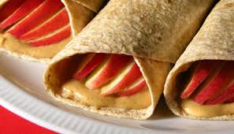
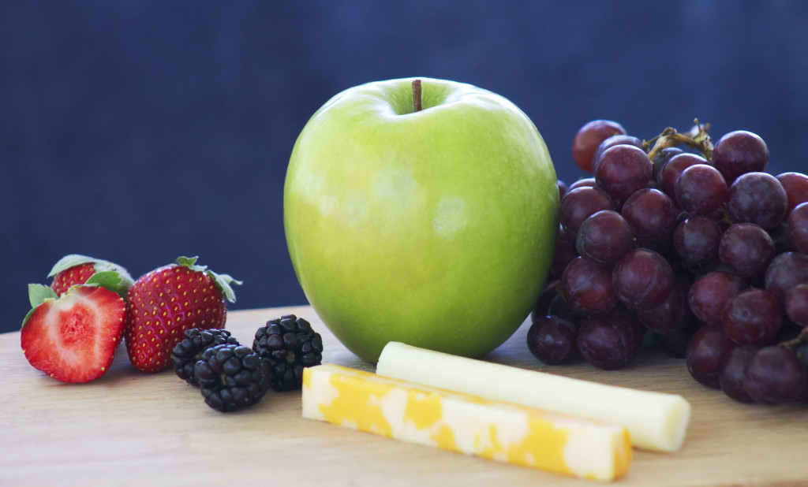
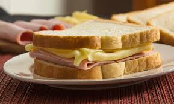

Physical Health of Teens
NUTRITION TIPS
- Breakfast should be one of your three healthy balanced meals in a day; different cultures choose to eat many different things for breakfast so there are many options including a sandwich or chapatti, wholegrain cereals, pancakes, rice or noodles, fruit or even soup. Breakfast will keep your blood sugar level steady until lunchtime and get your brain ready for learning.
- Try to have at least one portion of fruit or veg at every meal. One portion is equal to a handful. Remember fruit contains carbohydrate, so space it out through the day, and try to avoid too much fruit juice as this will raise your blood sugar levels quickly. Why not add some salad to your sandwich? Or a pot of fruit salad to your lunch box? You can also throw some extra vegetables into your pasta sauce at dinner time.
- One small pot of yogurt, a small matchbox sized piece of cheese and a 200ml glass of milk (dairy free alternatives are fine) will help keep your teeth and bones in tip top shape.
- Why not have some fish instead of meat for a change? It’s good for your brain and low in fat. Tuna makes a good sandwich or jacket potato filling.
Breakfast is key
Portion!
Don’t forget about calcium
Change is good
6 Healthy and grab-and-go snacks
|
Whole-wheat toast with peanut butter and banana: Toast it. Spread it. Slice the banana or eat it whole.  |
Egg sandwich in a pita or corn tortilla: Boil or scramble an egg, then plop it into a whole-wheat pita or tortilla. Spice it up with a little salsa.  |
|
Egg muffin cups for the week: Mix up some eggs with your favorite fillings (ham, cheese, spinach, or other veggies). Bake in a greased muffin tin at 350°F (180°C) for 20 minutes. |
Apple wedges and peanut butter: Eat them plain or roll them up in a whole-wheat tortilla. 
|
|
String cheese and a piece of fruit: The only thing you need to do is to grab your breakfast and go. 
|
Cheese and ham sandwich: Change it up with lunch foods in the morning. Choose whole-grain bread. Enjoy a fruit or veggie with it. 
|
Useful and easy exercices
Sit backs: Step 1
- Sit on floor, legs bent
- Arms straight in front
Sit backs: Step 2
- Lean back gradually
- Keep arms straight and tummy tight
- Take it as far back as comfortable
- Slowly return to sitting position
- repeat
Chairs Squats: Step 1
- Stand Tall
- Chair behind you
Chair squats: Step 2
- Arms straight in front
- Slowly start to sit down
- Stop before your butt hits the chair
- Slowly straighten to standing
- repeat
Needing help? Contact us 099 584 367
We are a goverment-funded service, providing quality, approved health information and advice